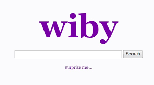

O wiby.me é um motor de busca especializado na "web clássica" ou "indie web", focado em indexar sites pessoais, amadores e leves, com visual semelhante à internet dos anos 90/início de 2000. Ele evita JavaScript pesado e anúncios, priorizando conteúdo textual de qualidade e páginas rápidas para computadores antigos.
Foco na Web Pessoal: Encontra blogs, sites de hobby, e projetos hospedados em plataformas como Neocities.
Leveza: Ideal para quem busca uma experiência de navegação rápida, sem rastreadores ou pop-ups
Conteúdo Qualitativo: útil para achar tutoriais originais, artigos detalhados e opiniões sinceras, muitas vezes perdidas no Google.
"Surprise Me": Possui um botão para explorar sites aleatórios.
O wiby.me é excelente para descobrir conteúdo único e nostálgico, voltado para usuários que preferem o texto à multimídia.